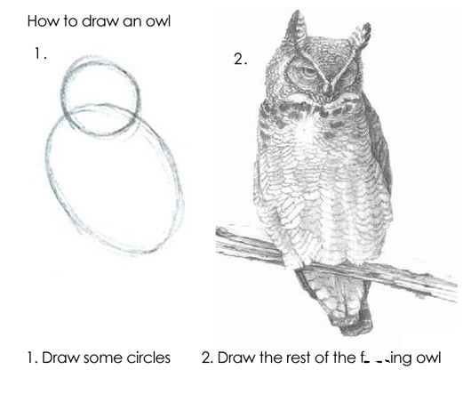
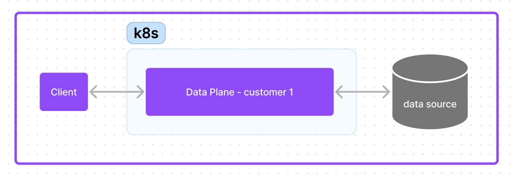

<!DOCTYPE html>
<html lang="en">
  <head>
    <meta charset="utf-8" />
    <meta name="viewport" content="width=device-width, initial-scale=1.0, maximum-scale=1.0, user-scalable=no" />

    <title></title>
    <link rel="stylesheet" href="dist/reveal.css" />
    <link rel="stylesheet" href="dist/theme/black.css" id="theme" />
    <link rel="stylesheet" href="plugin/highlight/zenburn.css" />
	<link rel="stylesheet" href="css/layout.css" />
	<link rel="stylesheet" href="plugin/customcontrols/style.css">

	<link rel="stylesheet" href="plugin/reveal-pointer/pointer.css" />


    <script defer src="dist/fontawesome/all.min.js"></script>

	<script type="text/javascript">
		var forgetPop = true;
		function onPopState(event) {
			if(forgetPop){
				forgetPop = false;
			} else {
				parent.postMessage(event.target.location.href, "app://obsidian.md");
			}
        }
		window.onpopstate = onPopState;
		window.onmessage = event => {
			if(event.data == "reload"){
				window.document.location.reload();
			}
			forgetPop = true;
		}

		function fitElements(){
			const itemsToFit = document.getElementsByClassName('fitText');
			for (const item in itemsToFit) {
				if (Object.hasOwnProperty.call(itemsToFit, item)) {
					var element = itemsToFit[item];
					fitElement(element,1, 1000);
					element.classList.remove('fitText');
				}
			}
		}

		function fitElement(element, start, end){

			let size = (end + start) / 2;
			element.style.fontSize = `${size}px`;

			if(Math.abs(start - end) < 1){
				while(element.scrollHeight > element.offsetHeight){
					size--;
					element.style.fontSize = `${size}px`;
				}
				return;
			}

			if(element.scrollHeight > element.offsetHeight){
				fitElement(element, start, size);
			} else {
				fitElement(element, size, end);
			}		
		}


		document.onreadystatechange = () => {
			fitElements();
			if (document.readyState === 'complete') {
				if (window.location.href.indexOf("?export") != -1){
					parent.postMessage(event.target.location.href, "app://obsidian.md");
				}
				if (window.location.href.indexOf("print-pdf") != -1){
					let stateCheck = setInterval(() => {
						clearInterval(stateCheck);
						window.print();
					}, 250);
				}
			}
	};


        </script>
  </head>
  <body>
    <div class="reveal">
      <div class="slides"><section  data-markdown><script type="text/template"><!-- .slide: class="has-dark-background drop" data-background-color="#121325" -->
<div class="" style="position: absolute; left: 0px; top: 0px; height: 700px; width: 960px; min-height: 700px; display: flex; flex-direction: column; align-items: center; justify-content: center" absolute="true">

### Zero to Production: 
Using Rust to Build a Hyper Performant Distributed SaaS Platform
<br>
<br>
<br>
slides: [shockleyje.com/talks/2023/ccc](shockleyje.com/talks/2023/ccc)

notes:

Hey y'all it's been a crazy day here. 

Big props to Barry for putting this conference together
</div></script></section><section  data-markdown><script type="text/template"><!-- .slide: class="has-dark-background drop" data-background-color="#121325" -->
<div class="" style="position: absolute; left: 0px; top: 0px; height: 700px; width: 960px; min-height: 700px; display: flex; flex-direction: column; align-items: center; justify-content: center" absolute="true">

### Introduction

notes:

My name is James Shockley & I'm currently a founding engineer at Neurelo, a data access platform, where we use Rust as the primary language on one of our three core planes

For those who may be hearing about Rust for the first time here, it's a general purpose compiled language. 

It's been voted the most loved programming languange on the annual stack overflow survey for many years now, though, adoption is really only starting to pick up in industry over the last year and a half, I'd say. 

So non-hobbiest perspectives aren't rare, but I've had enough me to ask me about what that's been like, and so I suggested this talk as an opportunity to share that perspective. I'm hoping not to disappoint. 


<div class="" style="position: absolute; left: 0%; top: 94%; height: 6%; width: 100%; display: flex; flex-direction: column; align-items: center; justify-content: center" >

<% footer %>
</div>
</div></script></section><section  data-markdown><script type="text/template"><!-- .slide: class="has-dark-background drop" data-background-color="#121325" -->
<div class="" style="position: absolute; left: 0px; top: 0px; height: 700px; width: 960px; min-height: 700px; display: flex; flex-direction: column; align-items: center; justify-content: center" absolute="true">

slides are available online 
<br>
the presentation will end with a link
</div></script></section><section  data-markdown><script type="text/template"><!-- .slide: class="has-dark-background drop" data-background-color="#121325" -->
<div class="" style="position: absolute; left: 0px; top: 0px; height: 700px; width: 960px; min-height: 700px; display: flex; flex-direction: column; align-items: center; justify-content: center" absolute="true">


<div class="" style="position: absolute; left: 0%; top: 94%; height: 6%; width: 100%; display: flex; flex-direction: column; align-items: center; justify-content: center" >

<div class="block">

college of charleston
</div>


</div>
</div>

<aside class="notes"><p>college of charleston alum, Computer Science</p>
<p>While there, I was the technical founder of two startups</p>
<p>Both are interesting stories, but not ones I have time for here</p>
<p>In short, this was kinda my startup awakening</p>
</aside></script></section><section  data-markdown><script type="text/template"><!-- .slide: class="has-dark-background drop" data-background-color="#121325" -->
<div class="" style="position: absolute; left: 0px; top: 0px; height: 700px; width: 960px; min-height: 700px; display: flex; flex-direction: column; align-items: center; justify-content: center" absolute="true">


<div class="" style="position: absolute; left: 0%; top: 94%; height: 6%; width: 100%; display: flex; flex-direction: column; align-items: center; justify-content: center" >

<div class="block">

german automotive industry veteran
</div>


</div>
</div>

<aside class="notes"><p>6 years of technology experience from Bosch Anderson &amp; Mercedes in Charleston, primarily on the data engineering &amp; manufacturing execution system side of the house</p>
<p>One day I realized that there was more to life than German automotive manufacturers.</p>
<p>I picked up doing freelance &amp; open-source web development on nights and weekends to rebuild my chops</p>
</aside></script></section><section  data-markdown><script type="text/template"><!-- .slide: class="has-dark-background drop" data-background-color="#121325" -->
<div class="" style="position: absolute; left: 0px; top: 0px; height: 700px; width: 960px; min-height: 700px; display: flex; flex-direction: column; align-items: center; justify-content: center" absolute="true">


<div class="" style="position: absolute; left: 0%; top: 94%; height: 6%; width: 100%; display: flex; flex-direction: column; align-items: center; justify-content: center" >

<div class="block">

founding software engineer
</div>


</div>
</div>

<aside class="notes"><p>Then a year later, I signed with Neurelo as a founding engineer and I have been living my best, fully oxidized life in our Rust codebase ever since.</p>
<p>When I started there was no platform, or any code for what would become our data plane written, so I have been there for most of it and worn almost every hat along the way</p>
<p>This is the experience I&#39;ll be drawing from today</p>
</aside></script></section><section  data-markdown><script type="text/template"><!-- .slide: class="has-dark-background drop" data-background-color="#121325" -->
<div class="" style="position: absolute; left: 0px; top: 0px; height: 700px; width: 960px; min-height: 700px; display: flex; flex-direction: column; align-items: center; justify-content: center" absolute="true">

### off the clock


<div class="" style="position: absolute; left: 0%; top: 94%; height: 6%; width: 100%; display: flex; flex-direction: column; align-items: center; justify-content: center" >

<div class="block">

guess what distro I used...
</div>


</div>
</div>

<aside class="notes"><p>Off the clock I enjoy getting outdoors. This was a picture I took crossing the NC\ GA border on the AT. I have some free candy for anyone who can guess what distro I was using at the time this was taken</p>
</aside></script></section><section  data-markdown><script type="text/template"><!-- .slide: class="has-dark-background drop" data-background-color="#121325" -->
<div class="" style="position: absolute; left: 0px; top: 0px; height: 700px; width: 960px; min-height: 700px; display: flex; flex-direction: column; align-items: center; justify-content: center" absolute="true">


</div></script></section><section  data-markdown><script type="text/template"><!-- .slide: class="has-dark-background drop" data-background-color="#121325" -->
<div class="" style="position: absolute; left: 0px; top: 0px; height: 700px; width: 960px; min-height: 700px; display: flex; flex-direction: column; align-items: center; justify-content: center" absolute="true">


<div class="" style="position: absolute; left: 0%; top: 94%; height: 6%; width: 100%; display: flex; flex-direction: column; align-items: center; justify-content: center" >

<div class="block">

park city, ut
</div>


</div>
</div>

<aside class="notes"><p>Outside of work I enjoy shredding pow. This was from getting some air on a 3 meter knuckle out in Park City Utah</p>
</aside></script></section><section  data-markdown><script type="text/template"><!-- .slide: class="has-dark-background drop" data-background-color="#121325" -->
<div class="" style="position: absolute; left: 0px; top: 0px; height: 700px; width: 960px; min-height: 700px; display: flex; flex-direction: column; align-items: center; justify-content: center" absolute="true">


<div class="" style="position: absolute; left: 0%; top: 94%; height: 6%; width: 100%; display: flex; flex-direction: column; align-items: center; justify-content: center" >

<div class="block">

big rock, sc
</div>


</div>
</div>

<aside class="notes"><p>I also enjoy climbing. Over right you can see the start of a climb called dragons roof I believe?  </p>
<p>Not pictured were the ants, yellowjackets, and heat- this place is honestly really a brutal climb and not because of the grade</p>
</aside></script></section><section  data-markdown><script type="text/template"><!-- .slide: class="has-dark-background drop" data-background-color="#121325" -->
<div class="" style="position: absolute; left: 0px; top: 0px; height: 700px; width: 960px; min-height: 700px; display: flex; flex-direction: column; align-items: center; justify-content: center" absolute="true">

#### Talk overview
</div></script></section><section  data-markdown><script type="text/template"><!-- .slide: class="has-dark-background drop" data-background-color="#121325" -->
<div class="" style="position: absolute; left: 0px; top: 0px; height: 700px; width: 960px; min-height: 700px; display: flex; flex-direction: column; align-items: center; justify-content: center" absolute="true">

- How & why Neurelo chose Rust
- What has the experience been like
- Demonstration of Rust development
</div>

<aside class="notes"><p>Three parts</p>
<p>During the first, I&#39;ll set some context around the choices that were being made at Neurelo at the time that a language was being selected for the development of our data plane, and how we ended up selecting Rust for that</p>
<p>I will share my experience around working with Rust in regards to how it has met the requirements we selected it based on</p>
<p>Finally, I will show you what these concepts mean when they come together, with a demonstration in building a distributed authentication system in Rust</p>
</aside></script></section><section  data-markdown><script type="text/template"><!-- .slide: class="has-dark-background drop" data-background-color="#121325" -->
<div class="" style="position: absolute; left: 0px; top: 0px; height: 700px; width: 960px; min-height: 700px; display: flex; flex-direction: column; align-items: center; justify-content: center" absolute="true">

This talk **is**..
</div>

<aside class="notes"><ul>
<li>My personal experience with using Rust to develop performance-critical distributed systems at Neurelo</li>
<li>A synthesis of resources I have consumed which have aided this purpose</li>
</ul>
</aside></script></section><section  data-markdown><script type="text/template"><!-- .slide: class="has-dark-background drop" data-background-color="#121325" -->
<div class="" style="position: absolute; left: 0px; top: 0px; height: 700px; width: 960px; min-height: 700px; display: flex; flex-direction: column; align-items: center; justify-content: center" absolute="true">

- [Zero2Prod: An Opinionated Introduction to Backend Development](https://www.zero2prod.com/index.html?country_code=US)
- [No Boilerplate](https://www.youtube.com/@NoBoilerplate): Fast, technical videos 
- Various [HackerNews](https://news.ycombinator.com/) resources
</div></script></section><section  data-markdown><script type="text/template"><!-- .slide: class="has-dark-background drop" data-background-color="#121325" -->
<div class="" style="position: absolute; left: 0px; top: 0px; height: 700px; width: 960px; min-height: 700px; display: flex; flex-direction: column; align-items: center; justify-content: center" absolute="true">

The talk **is not…**
</div></script></section><section  data-markdown><script type="text/template"><!-- .slide: class="has-dark-background drop" data-background-color="#121325" -->
<div class="" style="position: absolute; left: 0px; top: 0px; height: 700px; width: 960px; min-height: 700px; display: flex; flex-direction: column; align-items: center; justify-content: center" absolute="true">

An introduction to Rust itself

[But this is Google's in-house training program](https://google.github.io/comprehensive-rust/)
</div></script></section><section  data-markdown><script type="text/template"><!-- .slide: class="has-dark-background drop" data-background-color="#121325" -->
<div class="" style="position: absolute; left: 0px; top: 0px; height: 700px; width: 960px; min-height: 700px; display: flex; flex-direction: column; align-items: center; justify-content: center" absolute="true">




<div class="" style="position: absolute; left: 0%; top: 94%; height: 6%; width: 100%; display: flex; flex-direction: column; align-items: center; justify-content: center" >

<div class="block">

Basically gonna skip over step 2 
	and go straight to coloring
</div>


</div>
</div></script></section><section  data-markdown><script type="text/template"><!-- .slide: class="has-dark-background drop" data-background-color="#121325" -->
<div class="" style="position: absolute; left: 0px; top: 0px; height: 700px; width: 960px; min-height: 700px; display: flex; flex-direction: column; align-items: center; justify-content: center" absolute="true">

Reflective of my employer

We will talk about Neurelo, because the context is inseparable from my experience


<div class="" style="position: absolute; left: 0%; top: 94%; height: 6%; width: 100%; display: flex; flex-direction: column; align-items: center; justify-content: center" >

<div class="block">

*All trash takes & opinions are my own*
</div>


</div>
</div>

<aside class="notes"><p>My company has been really supportive about letting me use my experience at Neurelo to set the context for this talk and telling my experience in regards to our decision to use rust, as well as providing framework for a demonstration</p>
<p>A deeper talk on Neurelo’s architecture and how we’re solving data access problems, is not the focus or intention, no an advertisement</p>
<p>But if would be interesting to you, I or Chirag would love to hear that from you afterwards.</p>
</aside></script></section><section  data-markdown><script type="text/template"><!-- .slide: class="has-dark-background drop" data-background-color="#121325" -->
<div class="" style="position: absolute; left: 0px; top: 0px; height: 700px; width: 960px; min-height: 700px; display: flex; flex-direction: column; align-items: center; justify-content: center" absolute="true">

So let's get into it
</div></script></section><section  data-markdown><script type="text/template"><!-- .slide: class="has-dark-background drop" data-background-color="#121325" -->
<div class="" style="position: absolute; left: 0px; top: 0px; height: 700px; width: 960px; min-height: 700px; display: flex; flex-direction: column; align-items: center; justify-content: center" absolute="true">

OK, so what is Neurelo?

What problem did we set out to solve?
</div></script></section><section  data-markdown><script type="text/template"><!-- .slide: class="has-dark-background drop" data-background-color="#121325" -->
<div class="" style="position: absolute; left: 0px; top: 0px; height: 700px; width: 960px; min-height: 700px; display: flex; flex-direction: column; align-items: center; justify-content: center" absolute="true">

Data access
</div>

<aside class="notes"><p>As you or I as software engineers, understand the importance of data </p>
<p>We put a lot of time into activities like</p>
<p>a) modeling data itself - creating your schema
b) realizing access methods for data model - like creating rest API endpoints to interact with that data model
c) setting access control policies for that data - not only at the database level, but maybe an application-level RBAC concept as well
d) observing how our data is accessed - Are your users changing how they access their data over time, is an access methods performance degrading over time</p>
<p>And finally- all of that has to be maintained</p>
<p>Neurelo is a data access platform that provides an opinionated, but open and extensible starting point for performing all the responsibilities associated with data access, and executing them on your behalf-</p>
</aside></script></section><section  data-markdown><script type="text/template"><!-- .slide: class="has-dark-background drop" data-background-color="#121325" -->
<div class="" style="position: absolute; left: 0px; top: 0px; height: 700px; width: 960px; min-height: 700px; display: flex; flex-direction: column; align-items: center; justify-content: center" absolute="true">


<div class="" style="position: absolute; left: 0%; top: 94%; height: 6%; width: 100%; display: flex; flex-direction: column; align-items: center; justify-content: center" >

<div class="block">

Versioned data schema modeling in JSON
</div>


</div>
</div>

<aside class="notes"><p>You start with modeling your schema in a standard JSON format</p>
</aside></script></section><section  data-markdown><script type="text/template"><!-- .slide: class="has-dark-background drop" data-background-color="#121325" -->
<div class="" style="position: absolute; left: 0px; top: 0px; height: 700px; width: 960px; min-height: 700px; display: flex; flex-direction: column; align-items: center; justify-content: center" absolute="true">

(screenshot needed)


<div class="" style="position: absolute; left: 0%; top: 94%; height: 6%; width: 100%; display: flex; flex-direction: column; align-items: center; justify-content: center" >

<div class="block">

An autogenerated REST-syle "get all books" endpoint
</div>


</div>
</div>

<aside class="notes"><p>We generate a base set of access methods for your schema, both graphQL methods as well as OpenAPI specified REST-style HTTP endpoints.</p>
</aside></script></section><section  data-markdown><script type="text/template"><!-- .slide: class="has-dark-background drop" data-background-color="#121325" -->
<div class="" style="position: absolute; left: 0px; top: 0px; height: 700px; width: 960px; min-height: 700px; display: flex; flex-direction: column; align-items: center; justify-content: center" absolute="true">


<div class="" style="position: absolute; left: 0%; top: 94%; height: 6%; width: 100%; display: flex; flex-direction: column; align-items: center; justify-content: center" >

<div class="block">

Executing database migrations 
</div>


</div>
</div>

<aside class="notes"><p>And, if your data model changed and it&#39;s necessary to update the schema in your database, we&#39;ll let you know and generate the migrations for you. </p>
<p>You can either opt for us to apply those migrations for you, or  you can apply them manually</p>
</aside></script></section><section  data-markdown><script type="text/template"><!-- .slide: class="has-dark-background drop" data-background-color="#121325" -->
<div class="" style="position: absolute; left: 0px; top: 0px; height: 700px; width: 960px; min-height: 700px; display: flex; flex-direction: column; align-items: center; justify-content: center" absolute="true">


<div class="" style="position: absolute; left: 0%; top: 94%; height: 6%; width: 100%; display: flex; flex-direction: column; align-items: center; justify-content: center" >

<div class="block">

Query runner deployment
</div>


</div>
</div>

<aside class="notes"><p>Once your database and the data model are in sync, you can deploy a query runner to execute requests against your database using any of the data access methods in your data definition</p>
</aside></script></section><section  data-markdown><script type="text/template"><!-- .slide: class="has-dark-background drop" data-background-color="#121325" -->
<div class="" style="position: absolute; left: 0px; top: 0px; height: 700px; width: 960px; min-height: 700px; display: flex; flex-direction: column; align-items: center; justify-content: center" absolute="true">


<div class="" style="position: absolute; left: 0%; top: 94%; height: 6%; width: 100%; display: flex; flex-direction: column; align-items: center; justify-content: center" >

<div class="block">

Querying against a running query engine
</div>


</div>
</div>

<aside class="notes"><p>We generate a base set of access methods for your schema, both graphQL methods as well as OpenAPI specified REST-style HTTP endpoints.</p>
</aside></script></section><section  data-markdown><script type="text/template"><!-- .slide: class="has-dark-background drop" data-background-color="#121325" -->
<div class="" style="position: absolute; left: 0px; top: 0px; height: 700px; width: 960px; min-height: 700px; display: flex; flex-direction: column; align-items: center; justify-content: center" absolute="true">


<div class="" style="position: absolute; left: 0%; top: 94%; height: 6%; width: 100%; display: flex; flex-direction: column; align-items: center; justify-content: center" >

<div class="block">

Observing your data access patterns
</div>


</div>
</div>

<aside class="notes"><p>We report all metrics on your access patterns both on a complete environment level, as well as how your individual data access methods are performing</p>
</aside></script></section><section  data-markdown><script type="text/template"><!-- .slide: class="has-dark-background drop" data-background-color="#121325" -->
<div class="" style="position: absolute; left: 0px; top: 0px; height: 700px; width: 960px; min-height: 700px; display: flex; flex-direction: column; align-items: center; justify-content: center" absolute="true">

So where's the Rust?
</div></script></section><section  data-markdown><script type="text/template"><!-- .slide: class="has-dark-background drop" data-background-color="#121325" -->
<div class="" style="position: absolute; left: 0px; top: 0px; height: 700px; width: 960px; min-height: 700px; display: flex; flex-direction: column; align-items: center; justify-content: center" absolute="true">


<div class="" style="position: absolute; left: 0%; top: 94%; height: 6%; width: 100%; display: flex; flex-direction: column; align-items: center; justify-content: center" >

<div class="block">

The control plane configures data planes 
</div>


</div>
</div>

<aside class="notes"><p>The management UI is a React &gt; Next application which interfaces with a control plane</p>
<p>The control plane itself is an API which defines the target state of many data planes</p>
<p>In here, we show two data planes for our hosted product. However, it is also possible for customers to be able to host their own data plane</p>
<p>Let&#39;s zoom in on the data plane</p>
</aside></script></section><section  data-markdown><script type="text/template"><!-- .slide: class="has-dark-background drop" data-background-color="#121325" -->
<div class="" style="position: absolute; left: 0px; top: 0px; height: 700px; width: 960px; min-height: 700px; display: flex; flex-direction: column; align-items: center; justify-content: center" absolute="true">




<div class="" style="position: absolute; left: 0%; top: 94%; height: 6%; width: 100%; display: flex; flex-direction: column; align-items: center; justify-content: center" >

<div class="block">

The data plane is where you access your data 
</div>


</div>
</div>

<aside class="notes"><p>The data plane is what we were interacting with earlier in our HTTP request from postman. The data plane is where the query runner runs which executes your request against your database</p>
<p>100% of Neurelo&#39;s code path on the data plane has been written in Rust</p>
</aside></script></section><section  data-markdown><script type="text/template"><!-- .slide: class="has-dark-background drop" data-background-color="#121325" -->
<div class="" style="position: absolute; left: 0px; top: 0px; height: 700px; width: 960px; min-height: 700px; display: flex; flex-direction: column; align-items: center; justify-content: center" absolute="true">

### So how did we pick Rust for the data plane?
</div>

<aside class="notes"><p>So now that you know a little more about the data plane, let&#39;s discuss how we arrived at the decision to select Rust</p>
</aside></script></section><section  data-markdown><script type="text/template"><!-- .slide: class="has-dark-background drop" data-background-color="#121325" -->
<div class="" style="position: absolute; left: 0px; top: 0px; height: 700px; width: 960px; min-height: 700px; display: flex; flex-direction: column; align-items: center; justify-content: center" absolute="true">

Characteristics: 

1. High baseline performance
2. Low performance variability
3. High productivity
</div>

<aside class="notes"><p>1. 
There&#39;s a good rule of thumb that typically comes up when discussing how to choose a language or framework for a project, and that&#39;s to choose the language with the features you need and if you can have performance, then take it. </p>
<p>This isn&#39;t necessarily true for all projects, and ours is one of those- partially because we aren&#39;t building a widget, we are building a platform to build widgets on. Every bit of latency we introduce will be directly on each request from our customers</p>
<p>2. 
Developers expect their tooling to be stable, and we want our performance guarantees to be consistent. So runtime consistency is a primary requirement for us</p>
<p>3. 
We&#39;re building a greenfield application, so 1 &amp; 2 don&#39;t matter if we go broke trying to get it to market. In addition, we are building a distributed system where the tolerance for bugs, especially those which would impact our customers data integrity, is zero. </p>
<p>So our definition for productivity also extends to concepts like ensuring the correctness of our system.</p>
<p>So let&#39;s discuss baseline performance</p>
</aside></script></section><section  data-markdown><script type="text/template"><!-- .slide: class="has-dark-background drop" data-background-color="#121325" -->
<div class="" style="position: absolute; left: 0px; top: 0px; height: 700px; width: 960px; min-height: 700px; display: flex; flex-direction: column; align-items: center; justify-content: center" absolute="true">

*For a given set of compute resources, how quickly can the same logic be executed relative to other languages?*
</div>

<aside class="notes"><p>This is the definition we&#39;ll use for discussing baseline performance.</p>
</aside></script></section><section  data-markdown><script type="text/template"><!-- .slide: class="has-dark-background drop" data-background-color="#121325" -->
<div class="" style="position: absolute; left: 0px; top: 0px; height: 700px; width: 960px; min-height: 700px; display: flex; flex-direction: column; align-items: center; justify-content: center" absolute="true">

#### [Energy efficiency across programming languages: how do energy, time, and memory relate?](https://www.researchgate.net/publication/320436353_Energy_efficiency_across_programming_languages_how_do_energy_time_and_memory_relate)

<br>

#### [How Much Memory Do You Need to Run 1 Million Concurrent Tasks?](https://pkolaczk.github.io/memory-consumption-of-async/)
</div>

<aside class="notes"><p>For this, we will use synthetic benchmarks. The topic of benchmarking is a <strong>completely</strong> separate topic, and we can discuss ad nauseam about how one should do it. In the end, in the end, these were some noteworthy one</p>
</aside></script></section><section  data-markdown><script type="text/template"><!-- .slide: class="has-dark-background drop" data-background-color="#121325" -->
<div class="" style="position: absolute; left: 0px; top: 0px; height: 700px; width: 960px; min-height: 700px; display: flex; flex-direction: column; align-items: center; justify-content: center" absolute="true">

1. C, C++, Rust, Zig
2. Golang
3. Java, C#

...
</div>

<aside class="notes"><p>Again, we&#39;re really just building an understanding in which we can talk about the performance of various languages relative to each other for the certain tasks we need them for</p>
<ol start="5">
<li>Eliminated: Python, Typescript, Javascript, Ruby</li>
<li>Hanging in there: Java, C#</li>
<li>Contenders left: Rust, Zig, Golang, C++, C</li>
</ol>
</aside></script></section><section  data-markdown><script type="text/template"><!-- .slide: class="has-dark-background drop" data-background-color="#121325" -->
<div class="" style="position: absolute; left: 0px; top: 0px; height: 700px; width: 960px; min-height: 700px; display: flex; flex-direction: column; align-items: center; justify-content: center" absolute="true">

#### Performance (Predictability)
</div></script></section><section  data-markdown><script type="text/template"><!-- .slide: class="has-dark-background drop" data-background-color="#121325" -->
<div class="" style="position: absolute; left: 0px; top: 0px; height: 700px; width: 960px; min-height: 700px; display: flex; flex-direction: column; align-items: center; justify-content: center" absolute="true">


<div class="" style="position: absolute; left: 0%; top: 94%; height: 6%; width: 100%; display: flex; flex-direction: column; align-items: center; justify-content: center" >

<div class="block">

[Golang garbage collection & latency spikes](https://discord.com/blog/why-discord-is-switching-from-go-to-rust)
</div>


</div>
</div>

<aside class="notes"><p>Golang has unique performance characteristics due to it&#39;s &#39;Stop the world&#39; style garbage collection. </p>
<p>This chart is from an article about why Discord was switching away from Golang in favor of Rust due to this specific quality. They were seeing this variable performance manifest and had exhausted all tuning options. They were simply up against the limits of the their own </p>
<p>This is exactly what we didn&#39;t want to see in our performance profile, and as such the only thing we&#39;ve written in golang is our kubernetes operator</p>
</aside></script></section><section  data-markdown><script type="text/template"><!-- .slide: class="has-dark-background drop" data-background-color="#121325" -->
<div class="" style="position: absolute; left: 0px; top: 0px; height: 700px; width: 960px; min-height: 700px; display: flex; flex-direction: column; align-items: center; justify-content: center" absolute="true">

Results: C, C++, Rust, Zig
</div></script></section><section  data-markdown><script type="text/template"><!-- .slide: class="has-dark-background drop" data-background-color="#121325" -->
<div class="" style="position: absolute; left: 0px; top: 0px; height: 700px; width: 960px; min-height: 700px; display: flex; flex-direction: column; align-items: center; justify-content: center" absolute="true">

#### Developer ergonomics & Productivity
</div>

<aside class="notes"><p>:</p>
<p>In short, it doesn’t matter how fast your language is in benchmarks, you still need to build your product. Let’s take our technologies out of the vacuum and express what we need from our language ecosystems in regards to developer experience</p>
</aside></script></section><section  data-markdown><script type="text/template"><!-- .slide: class="has-dark-background drop" data-background-color="#121325" -->
<div class="" style="position: absolute; left: 0px; top: 0px; height: 700px; width: 960px; min-height: 700px; display: flex; flex-direction: column; align-items: center; justify-content: center" absolute="true">

Correctness & quality as an extension of productivity
</div>

<aside class="notes"><p>Correctness (objective) - the ability to express intent directly using code. Or otherwise, does the code do what is specified.</p>
<p>Quality (subjective) - a metric expressing maintainability and readability of correct code</p>
<p>Quality code must be correct, but not all correct code is high-quality</p>
<p>Our tolerance for bugs in our system was absolute zero. We cannot pass on the burden of incorrect logic to our customers</p>
<p>If your data access platform is gaslighting you, you’re going to stop using it</p>
</aside></script></section><section  data-markdown><script type="text/template"><!-- .slide: class="has-dark-background drop" data-background-color="#121325" -->
<div class="" style="position: absolute; left: 0px; top: 0px; height: 700px; width: 960px; min-height: 700px; display: flex; flex-direction: column; align-items: center; justify-content: center" absolute="true">

Encouraging correctness and optimizing for quality
</div>

<aside class="notes"><p>Well, one strategy for ensuring correctness is writing tests-</p>
<p>With the best tests are those which don’t need to be written.</p>
<p>Rust eliminates large swathes of type, memory, and concurrency related errors, meaning fewer tests need to be maintained, reducing fatigue associated with testing- reducing the burden of testing leads to better test quality</p>
<p>TODO: <a href="https://youtu.be/4dvf6kM70qM?t=603">How does this look in principle?</a></p>
</aside></script></section><section  data-markdown><script type="text/template"><!-- .slide: class="has-dark-background drop" data-background-color="#121325" -->
<div class="" style="position: absolute; left: 0px; top: 0px; height: 700px; width: 960px; min-height: 700px; display: flex; flex-direction: column; align-items: center; justify-content: center" absolute="true">

Writing less tests & better code with syntax
</div>

<aside class="notes"><p>Just as types tell the compiler what data you’re working with, Rust’s unique concepts and syntax features, such as ownership and lifetimes, tell the compiler whose and when that data exists at compile time.</p>
<p>I am going to run through the following concepts extremely quickly, the main takeaway should be that Rust has specific syntax which helps convey your intent to the compiler, so it can detect more potential bugs for you</p>
</aside></script></section><section  data-markdown><script type="text/template"><!-- .slide: class="has-dark-background drop" data-background-color="#121325" -->
<div class="" style="position: absolute; left: 0px; top: 0px; height: 700px; width: 960px; min-height: 700px; display: flex; flex-direction: column; align-items: center; justify-content: center" absolute="true">

Result, communicates possibility of error
```
enum Result<T, E> {
   Ok(T),
   Err(E),
}
```

Option, communicates presence or absence of a value
```
enum Option<T> {
   Some(T),
   None,
}
```
</div>

<aside class="notes"><p>Errors are a part of the real world, because they are not exceptions, they are expected. To write code that is error-free is to write code that does not interact with external systems</p>
<p>Error handling is first class in Rust via the Result enum, which communicates the possibility of an error. You cannot interact directly with a value that might be an error, you have to handle it as a Result</p>
<p>Also, Rust doesn&#39;t have null as a language concept, and I am personally part of an on call team which will break into your place if you create a PR with null support. </p>
<p>Instead, we use the option enum to communicate the possibility that an operation may return no data</p>
</aside></script></section><section  data-markdown><script type="text/template"><!-- .slide: class="has-dark-background drop" data-background-color="#121325" -->
<div class="" style="position: absolute; left: 0px; top: 0px; height: 700px; width: 960px; min-height: 700px; display: flex; flex-direction: column; align-items: center; justify-content: center" absolute="true">

```
// Pattern match the Option to retrieve the value
match option {
    // The division was valid
    Some(x) => println!("Result: {x}"),
    // The division was invalid
    None    => println!("Cannot divide by 0"),
}
```
</div>

<aside class="notes"><p>One way that you might interact with a result enum is pattern matching</p>
<p>The default behavior in Rust is to ensure your enums, like the Option enum we just discussed are matched exhaustively. This ensures the burden is not on you to remember all the various code paths you have to handle, instead- you use enums to model your return states and by default, you will have have your return paths covered.</p>
</aside></script></section><section  data-markdown><script type="text/template"><!-- .slide: class="has-dark-background drop" data-background-color="#121325" -->
<div class="" style="position: absolute; left: 0px; top: 0px; height: 700px; width: 960px; min-height: 700px; display: flex; flex-direction: column; align-items: center; justify-content: center" absolute="true">

Ownership
```
fn main() {
	// gives_ownership moves its return
	// value into s1
    let s1 = gives_ownership();         

	// s2 comes into scope
    let s2 = String::from("hello");     

    // s2 is moved into
    // takes_and_gives_back, which also
    // moves its return value into s3
    let s3 = takes_and_gives_back(s2);  
}
```
</div>

<aside class="notes"><p>Ownership and borrowing are the memory management systems which we use in place of garbage collection</p>
<p>By default, values are moved into the scope of the functions you pass them to. You only get those values back if you return them.</p>
</aside></script></section><section  data-markdown><script type="text/template"><!-- .slide: class="has-dark-background drop" data-background-color="#121325" -->
<div class="" style="position: absolute; left: 0px; top: 0px; height: 700px; width: 960px; min-height: 700px; display: flex; flex-direction: column; align-items: center; justify-content: center" absolute="true">

Borrowing
```
fn main() {
    let s1 = String::from("hello");

    let len = calculate_length(&s1);

    println!("The length of '{}' is {}.", s1, len);
}

fn calculate_length(s: &String) -> usize {
    s.len()
}
```
</div>

<aside class="notes"><p>By default, borrowed references are immutable. There can be any number of immutable references issued. </p>
<p>References can be immutable, but only one of those can exist at once</p>
</aside></script></section><section  data-markdown><script type="text/template"><!-- .slide: class="has-dark-background drop" data-background-color="#121325" -->
<div class="" style="position: absolute; left: 0px; top: 0px; height: 700px; width: 960px; min-height: 700px; display: flex; flex-direction: column; align-items: center; justify-content: center" absolute="true">

Lifetimes

```
// all references in the signature 
// must have the same lifetime (denoted `a)
fn longest<'a>(x: &'a str, y: &'a str) -> &'a str {
    if x.len() > y.len() {
        x
    } else {
        y
    }
}
```
</div>

<aside class="notes"><p>Ok, let&#39;s extend the movement concept to something more complicated- in this example, we calculate the longest string slice from two references taken as arguments </p>
<p>The return value can&#39;t be ensured at compile time, so we need a way to express that both values must be valid at return time. </p>
<p>For this we define a single lifetime `a, and since we can return either x or y, we annotate that both of those values must have the lifetime a </p>
<p><a href="https://www.reddit.com/r/rust/comments/bltnfv/simplest_best_explanation_of_lifetimes/">https://www.reddit.com/r/rust/comments/bltnfv/simplest_best_explanation_of_lifetimes/</a></p>
</aside></script></section><section  data-markdown><script type="text/template"><!-- .slide: class="has-dark-background drop" data-background-color="#121325" -->
<div class="" style="position: absolute; left: 0px; top: 0px; height: 700px; width: 960px; min-height: 700px; display: flex; flex-direction: column; align-items: center; justify-content: center" absolute="true">

OK, so what do we get from all this syntax? 

```
use no_panic::no_panic;

// no_panic macro can be used to prove at compile time 
// that there are no code paths 
// In your code, your dependencies, and the std lib
// That will ever panic. ever.

#[no_panic]
fn demo(s: &str) -> &str {
    &s[1..]
}

fn main() {
    println!("{}", demo("input string"));
}
```
</div></script></section><section  data-markdown><script type="text/template"><!-- .slide: class="has-dark-background drop" data-background-color="#121325" -->
<div class="" style="position: absolute; left: 0px; top: 0px; height: 700px; width: 960px; min-height: 700px; display: flex; flex-direction: column; align-items: center; justify-content: center" absolute="true">

[Google developers rated their code quality & correctness highly after using rust](/c20c0a8e19ce4f369307f744a4c0cd1f?pvs=25)
</div></script></section><section  data-markdown><script type="text/template"><!-- .slide: class="has-dark-background drop" data-background-color="#121325" -->
<div class="" style="position: absolute; left: 0px; top: 0px; height: 700px; width: 960px; min-height: 700px; display: flex; flex-direction: column; align-items: center; justify-content: center" absolute="true">

Guarding against race conditions by using language features and syntax, like lifetimes, rather than tests which have to be maintained, is a whole lot safer and time efficient, and your time matters
</div></script></section><section  data-markdown><script type="text/template"><!-- .slide: class="has-dark-background drop" data-background-color="#121325" -->
<div class="" style="position: absolute; left: 0px; top: 0px; height: 700px; width: 960px; min-height: 700px; display: flex; flex-direction: column; align-items: center; justify-content: center" absolute="true">

#### Tradeoffs
</div>

<aside class="notes"><p>OK, so I&#39;ve talked a lot about why Rust is great, because for us it has been, but there are clear tradeoffs</p>
</aside></script></section><section  data-markdown><script type="text/template"><!-- .slide: class="has-dark-background drop" data-background-color="#121325" -->
<div class="" style="position: absolute; left: 0px; top: 0px; height: 700px; width: 960px; min-height: 700px; display: flex; flex-direction: column; align-items: center; justify-content: center" absolute="true">

Compile speed
</div>

<aside class="notes"><p>There’s no way around it- compilation times are slow compared to C++, and especially Golang. However, I believe this is a fine tradeoff, especially when you consider that the strong type system and plugins like Rust Analyzer for VS Code in particular, allow you to get nearly instant feedback from that type system. It’s easy to forgive the compilation times when put in the context of how much the compiler gives you for free.</p>
<p>And in our case, it was around 15 minutes on an M1 mac for our largest cargo workspace consisting of multiple projects with a completely clean build. However, you&#39;re not usually doing clean builds, and instead incremental ones, so in reality it ended up being closer to 5 minutes, so it&#39;s just solidly in coffee break territory</p>
</aside></script></section><section  data-markdown><script type="text/template"><!-- .slide: class="has-dark-background drop" data-background-color="#121325" -->
<div class="" style="position: absolute; left: 0px; top: 0px; height: 700px; width: 960px; min-height: 700px; display: flex; flex-direction: column; align-items: center; justify-content: center" absolute="true">

Rust is unfamiliar
</div>

<aside class="notes"><p>We&#39;ve like barely even touched on concepts like ownership and lifetimes</p>
<p>These concepts are unfamiliar and unique concepts to Rust, and they took me some time to fully understand</p>
<p>But, all things unfamiliar in Rust only needs to be learned once. You only learn Cargo, Rust&#39;s build system <em>once</em>. </p>
<p>You only learn lifetimes <em>once</em>.
You only learn borrowing &amp; ownership <em>once</em>. </p>
<p>You can master the language, and feel confident that the skills you learn today, will still be valid 5, 10, 20 years from now.</p>
</aside></script></section><section  data-markdown><script type="text/template"><!-- .slide: class="has-dark-background drop" data-background-color="#121325" -->
<div class="" style="position: absolute; left: 0px; top: 0px; height: 700px; width: 960px; min-height: 700px; display: flex; flex-direction: column; align-items: center; justify-content: center" absolute="true">

#### Let's put it in practice
</div></script></section><section  data-markdown><script type="text/template"><!-- .slide: class="has-dark-background drop" data-background-color="#121325" -->
<div class="" style="position: absolute; left: 0px; top: 0px; height: 700px; width: 960px; min-height: 700px; display: flex; flex-direction: column; align-items: center; justify-content: center" absolute="true">


</div></script></section><section  data-markdown><script type="text/template"><!-- .slide: class="has-dark-background drop" data-background-color="#121325" -->
<div class="" style="position: absolute; left: 0px; top: 0px; height: 700px; width: 960px; min-height: 700px; display: flex; flex-direction: column; align-items: center; justify-content: center" absolute="true">

- Issue & token to db, cache
- Validate protected route
</div></script></section><section  data-markdown><script type="text/template"><!-- .slide: class="has-dark-background drop" data-background-color="#121325" -->
<div class="" style="position: absolute; left: 0px; top: 0px; height: 700px; width: 960px; min-height: 700px; display: flex; flex-direction: column; align-items: center; justify-content: center" absolute="true">

- Compile-time SQL checking
- HTTP server metrics
- Function-level metrics
</div></script></section><section  data-markdown><script type="text/template"><!-- .slide: class="has-dark-background drop" data-background-color="#121325" -->
<div class="" style="position: absolute; left: 0px; top: 0px; height: 700px; width: 960px; min-height: 700px; display: flex; flex-direction: column; align-items: center; justify-content: center" absolute="true">

- Compile-time SQL checking
- HTTP server metrics
- Function-level metrics
</div></script></section><section  data-markdown><script type="text/template"><!-- .slide: class="has-dark-background drop" data-background-color="#121325" -->
<div class="" style="position: absolute; left: 0px; top: 0px; height: 700px; width: 960px; min-height: 700px; display: flex; flex-direction: column; align-items: center; justify-content: center" absolute="true">

<iframe width="1539" height="801" src="https://www.youtube.com/embed/dQw4w9WgXcQ" title="Rick Astley - Never Gonna Give You Up (Official Music Video)" frameborder="0" allow="accelerometer; autoplay; clipboard-write; encrypted-media; gyroscope; picture-in-picture; web-share" allowfullscreen></iframe>
</div></script></section></div>
    </div>

    <script src="dist/reveal.js"></script>

    <script src="plugin/markdown/markdown.js"></script>
    <script src="plugin/highlight/highlight.js"></script>
    <script src="plugin/zoom/zoom.js"></script>
    <script src="plugin/notes/notes.js"></script>
    <script src="plugin/math/math.js"></script>
	<script src="plugin/mermaid/mermaid.js"></script>
	<script src="plugin/chart/chart.min.js"></script>
	<script src="plugin/chart/plugin.js"></script>
	<script src="plugin/customcontrols/plugin.js"></script>
	<script src="plugin/reveal-pointer/pointer.js"></script>

    <script>
      function extend() {
        var target = {};
        for (var i = 0; i < arguments.length; i++) {
          var source = arguments[i];
          for (var key in source) {
            if (source.hasOwnProperty(key)) {
              target[key] = source[key];
            }
          }
        }
        return target;
      }

	  function isLight(color) {
		let hex = color.replace('#', '');

		// convert #fff => #ffffff
		if(hex.length == 3){
			hex = `${hex[0]}${hex[0]}${hex[1]}${hex[1]}${hex[2]}${hex[2]}`;
		}

		const c_r = parseInt(hex.substr(0, 2), 16);
		const c_g = parseInt(hex.substr(2, 2), 16);
		const c_b = parseInt(hex.substr(4, 2), 16);
		const brightness = ((c_r * 299) + (c_g * 587) + (c_b * 114)) / 1000;
		return brightness > 155;
	}

	var bgColor = getComputedStyle(document.documentElement).getPropertyValue('--r-background-color').trim();
	var isLight = isLight(bgColor);

	if(isLight){
		document.body.classList.add('has-light-background');
	} else {
		document.body.classList.add('has-dark-background');
	}

      // default options to init reveal.js
      var defaultOptions = {
        controls: true,
        progress: true,
        history: true,
        center: true,
        transition: 'default', // none/fade/slide/convex/concave/zoom
        plugins: [
          RevealMarkdown,
          RevealHighlight,
          RevealZoom,
          RevealNotes,
          RevealMath.MathJax3,
		  RevealMermaid,
		  RevealChart,
		  RevealCustomControls,
	      RevealPointer,
        ],


    	allottedTime: 120 * 1000,

		mathjax3: {
			mathjax: 'plugin/math/mathjax/tex-mml-chtml.js',
		},
		markdown: {
		  gfm: true,
		  mangle: true,
		  pedantic: false,
		  smartLists: false,
		  smartypants: false,
		},

		mermaid: {
			theme: isLight ? 'default' : 'dark',
		},

		customcontrols: {
			controls: [
			]
		},
      };

      // options from URL query string
      var queryOptions = Reveal().getQueryHash() || {};

      var options = extend(defaultOptions, {"width":960,"height":700,"margin":0.04,"controls":true,"progress":true,"slideNumber":false,"transition":"slide","transitionSpeed":"default"}, queryOptions);
    </script>

    <script>
      Reveal.initialize(options);
    </script>
  </body>

  <!-- created with Advanced Slides -->
</html>
